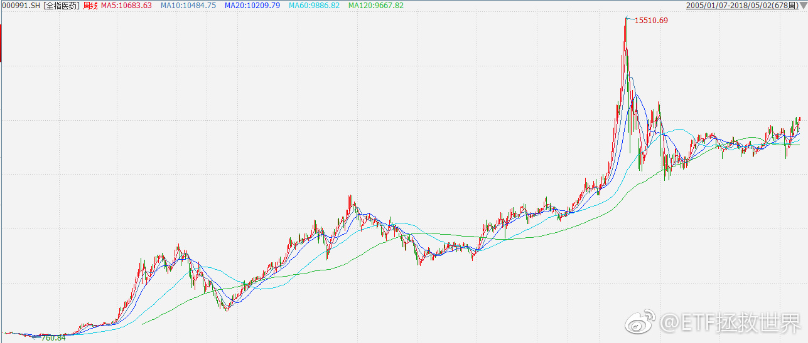

你们可能没有注意过，雪球上的卖惨文评论量特别高。不仅是大v的，哪怕是没有一个粉丝，只要写的够惨，评论也特别多。我想，有三个原因。第一，好为人师。你会看到评论里很多人指导发帖人应该怎么投资。这是一种人类的本能，挡不住。尤其是炒股的人，在社会上基本没有地位。在家里也不受待见，好不容易看到这么惨的了，必须教育一下，满足一下自己。第二个叫做莫名开心。因为自己也很惨，本来以为是最惨的，结果出来一个更惨的。简直开心的不得了，所以评论讽刺一下，觉得自己亏的少多了。第三个叫做感同身受。看着卖惨文，好像看到了自己失散多年的twins兄弟。悲从心中来，评论一下互相打气。当然，也有不少纯洁的少男少女，真的信以为真，纷纷打赏支持……至于真假，我就问你一句：如果是你，亏的底儿掉，亚历山大，痛不欲生，欲哭无泪，你还有没有心情每天在网上把自己的伤疤扒开让别人围观奚落？有没有？每天哦。 本文拒绝转载，谢谢！
回复@飞雨的魔法袋:你居然当真了。很明显是小说啊。//@飞雨的魔法袋:回复@奥斯特洛夫大柴夫斯基:元神这么认真的炒股和生活，这次他太惨了，笑不出来。@ETF拯救世界:球球上有一位 @方舟88 ，429还在发帖，突然就去了。虽然不是很熟悉，但也经常看到他的帖子，真的很震惊。非常惋惜，一路走好。还有之前的大v @樱桃之王，也是突然之间说没就没了。年纪都不大，三四十岁。其它的养生之道就不必说了，活在世上意外也很多说不过来。只是一点，各位，在这个市场上赚多少钱，很重要，但真的不是最重要的。赚了赔了，开开心心，舒舒服服最重要。活着最重要。
球球上有一位 @方舟88 ，429还在发帖，突然就去了。虽然不是很熟悉，但也经常看到他的帖子，真的很震惊。非常惋惜，一路走好。还有之前的大v @樱桃之王，也是突然之间说没就没了。年纪都不大，三四十岁。其它的养生之道就不必说了，活在世上意外也很多说不过来。只是一点，各位，在这个市场上赚多少钱，很重要，但真的不是最重要的。赚了赔了，开开心心，舒舒服服最重要。活着最重要。
我最近在想一件事。目前A股全市场估值即将进入低估区域。就像之前两次，没有意外。但进入低估，只是说下跌空间不大，并不一定是要涨。在一个区间震荡几年，也很正常。如果这样，那么几年不挣钱恐怕也没什么意思。所以，我考虑在计划里用一小部分资金公布一个吃波段的附加策略。还没想好，只是有个想法。
回复@ZhangJimmy:电梯就是，永远在最低层和最高层之间波动。你如果在高层不下去，就会被带到底层。然后周而复始，只有波动，没有突破。很多人害怕自己持有的品种也会这样，所以总是希望低位买入，高位卖出。想法是没错，可是如果判断错了，你坐的不是电梯，而是火箭，你下去以后它就飞了，那就非常惨了@ETF拯救世界:$全指医药 sh000991$ 记住，新高不卖。拿着上涨的东西不要随便乱跑。
回复@润泽20170101:下一篇公众号文章就写电梯吧。“那些年，我追过的女孩……”不是，打错字了，“那些年，我坐过的电梯……”//@润泽20170101:电梯比套牢还恐怖，thats me！！！每天过来读圣经，希望不要害怕。@ETF拯救世界:$全指医药 sh000991$ 记住，新高不卖。拿着上涨的东西不要随便乱跑。
回复@好心情S65:如果分级基金消失，按照净值处理AB，那么A……然后B……自己发挥想象吧。//@好心情S65:益达，今天分级A怎么个意思，要出啥大事了吗？//@ETF拯救世界:有没有发现被撒狗粮的战友们没有一个开心的……---:抱歉，作者已设置仅展示半年内微博，此微博已不可见。
回复@冬_zi_zinedineZidane:我的意思是，先定义“热门”。到底是讨论的人多，还是买的人多，还是表现好，区分对待。当然，从我的角度讲，我最讨厌的东西就是“热门”。我喜欢买冷门的东西，越冷越喜欢。//@冬_zi_zinedineZidane:E大言下之意，就是它们的热门是宣传做得好？@ETF拯救世界:$全指医药 sh000991$ 记住，新高不卖。拿着上涨的东西不要随便乱跑。
回复@索亚VEXX:价格和市场被严格控制的东西有什么好谈的。。也谈不了。//@索亚VEXX:益达 想听听你关于楼市的看法。其实我把楼市也用股市标准衡量，房租多少年够房价就是他的市盈率，现在看好多城市的楼市市盈率也40-50了。@ETF拯救世界:再说一次，消费、医药强，代表环境不好，因为这些都是所谓的“防守股”。所以，接下来不要太乐观。当然，对我们来说是好事，业绩增长+估值降低，底部区域会更加快速的到来。就等不知道出什么事砸出来的大坑了。
一个品种，十年、二十年，如果涨的很好，你能拿住，恭喜你，能赚很多。比这更出色的，是你能吃到大波段。也就是高点附近卖出，低点附近买入。十年有2、3次，那你的收益率会出现暴击。十年过去，你已经封神。比如全指医药，2005-2015涨了20倍。是2000%！然而你如果能做好2个波段，30-50倍妥妥的。记住，是十年两次。然而，如果你非要挑战自己以及常识，一定要吃到所有小波动，每年操作很多次，那不好意思，你可能连3倍都赚不到。不信你试试。当你真的明白了，十年，过去了。
回复@岁月静好啊好:这你就错了。你知道有多少人害怕坐电梯在上涨的时候不停的卖出吗。这才是普通正常人的反应。//@岁月静好啊好:不用说的吧，e帅，涨的时候没有想卖的。@ETF拯救世界:$全指医药 sh000991$ 记住，新高不卖。拿着上涨的东西不要随便乱跑。
回复@疯吹了无痕:热门是因为真的好还是宣传工作做得好？先回答这个问题再讨论。//@疯吹了无痕:e大，能不能谈谈对现在雪球热门的指数基金的看法，比如红机机会501029，500行业中性低波动003318等。@ETF拯救世界:$全指医药 sh000991$ 记住，新高不卖。拿着上涨的东西不要随便乱跑。
回复@ETF信徒者:1月的时候，你有没有感受到一种氛围。就是价投们的狂欢。有没有一种寒冷的感觉。如果你有，就能先知先觉了。我有。//@ETF信徒者:价值元年坑了多少散户，E大我想问一下，如何才能做到先知先觉，而不是被坑杀了，才发现自己被人卖了还在帮别人数钱@ETF拯救世界:浓眉大眼的阿胶也快跌停了。救救蓝筹股。